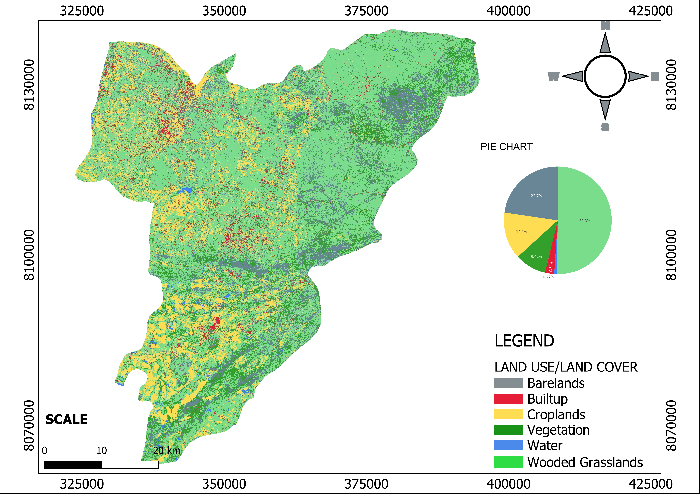

GIS • REMOTE SENSING • EARTH OBSERVATION
Satellite-based Land Use and Land Cover classification using Sentinel-2 multispectral imagery, Google Earth Engine and GIS techniques to map and analyse the spatial distribution of major land-cover classes.
Land Use and Land Cover mapping was undertaken using Earth observation data and GIS techniques to identify and classify the major land-cover categories within the study area.
Sentinel-2 multispectral imagery was used as the primary satellite data source, while Google Earth Engine provided the cloud-based environment for image processing, classification and accuracy assessment.
The resulting LULC map provides spatial information that can support land-use planning, environmental monitoring, agricultural assessment and natural resource management.
Land Use & Land Cover Mapping
Identify and map the major land-use and land-cover classes within the study area.
Utilise multispectral Sentinel-2 imagery to extract useful information about the Earth's surface.
Apply a supervised machine-learning classification workflow to classify different land-cover types.
Evaluate the performance of the resulting classification using statistical accuracy measures.
Sentinel-2 multispectral imagery was prepared for analysis and representative training samples were developed for the identified land-cover classes. A supervised machine-learning classification workflow was then applied to generate the LULC dataset, followed by accuracy assessment and map production.

FINAL GIS OUTPUT
The final classification identifies six major land-cover classes: Water Bodies, Built-up Areas, Croplands, Vegetation, Wooded Grassland and Bare Land.
Wooded grassland represents the largest mapped land-cover class.
Bare land forms a significant proportion of the mapped area.
Cropland areas account for approximately 14.1% of the mapped area.
Vegetation accounts for approximately 9.42% of the mapped area.
Built-up areas represent approximately 2.73% of the mapped area.
Water bodies represent approximately 0.72% of the mapped area.
The classification achieved an overall accuracy of approximately 95.61%, with a Kappa coefficient of approximately 0.9561.
Support spatial planning and land-management decisions.
Provide spatial information for monitoring environmental conditions and landscape change.
Support assessment and monitoring of agricultural land.
Provide land-cover information for natural-resource management.
GIS PORTFOLIO
Return to the main portfolio to explore additional GIS, mineral exploration, groundwater, UAV, GNSS and Web GIS projects.
BACK TO PORTFOLIO